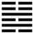

Lôi Thủy Giải (解 xiè)
Không thể bị nạn hoài được, thế nào cũng tới lúc giải nạn, vì vậy sau quẻ Kiển tới quẻ Giải. Giải là cởi, tan.
Thoán từ:
解: 利西南, 无所往, 其來復吉. 有攸往, 夙, 吉．
Giải : Lợi Tây nam, vô sở vãng, kì lai phục, cát. Hữu du vãng, túc, cát.
Dịch: tan cởi: đi về Tây nam thì lợi, đừng đa sự, cứ khôi phục lại như cũ thì tốt. Nhưng cũng có điều đáng làm, làm cho chóng thì tốt.
Giảng: Tượng quẻ là âm dương giao hoà với nhau, sấm (Chấn) động và mưa (Khảm) đổ, bao nhiêu khí u uất tan hết, cho nên gọi là Giải. Cũng có thể Giảng: Hiểm (Khảm) sinh ra nạn, nhờ động (Chấn) mà thoát nạn nên gọi là Giải.
Khi mọi hoạn nạn đã tan rồi, thì dân chỉ mong an cư lạc nghiệp, người trị dân nên có chính sách khoan đại, giản dị (Tây Nam thuộc Khôn là đường lối khoan đại, bình dị); đừng đa sự, cứ khôi phục trật tự cũ cũng đủ tốt rồi. Tuy nhiên cũng phải trừ những tệ đã gây ra những hoạn nạn trước kia, cũng phải sửa đổi cho sự bình trị được lâu dài, công việc đó nên làm cho mau xong (vẫn là ý đừng đa sự) thì tốt.
Đại tượng truyện khuyên sau khi giải nạn rồi, nên tha tội cho những kẻ lầm lỗi trước, nếu không tha được thì cũng nên giảm án cho nhẹ đi (quân tử dĩ xá quá, hựu tội).
Ý nghĩa các hào :
1.
初六: 无咎.
Sơ lục: Vô cữu.
Dịch: Hào 1, âm: không lỗi.
Giảng: Mới bắt đầu vào thời cởi mở, hào này âm nhu, mà có dương cương (hào 4) ở trên ứng, cứ lặng lẽ ở yên không sinh sự thì không có lỗi gì cả.
2.
九二: 田獲三狐, 得黃矢, 貞, 吉．
Cửu nhị: Điền hoạch tam hồ, đắc hoàng thỉ, trinh, cát.
Dịch: Hào 2, dương: Đi săn được ba con cáo, được mũi tên màu vàng, giữ đạo chính thì tốt.
Giảng: Không ai biết “ba con cáo” ám chỉ những hào nào, Chu Hi ngỡ là hào âm 1, 3 và trên cùng (trừ hào âm 5). Chỉ có thể đoán ý rằng: hào này dương cương, ứng với hào 5 âm, vị nguyên thủ, cho nên thế khá mạnh, có trách nhiệm với quốc gia trừ bọn tiểu nhân (ba con cáo), mà không mất mũi tên màu vàng (tức đạo trung trực – vàng là màu của trung ương, mũi tên tượng trưng cho việc ngay thẳng: trực). Hào từ khuyên phải giữ vững (trinh) đạo trung đó thì mới tốt.
3.
六三: 負且乘, 致寇至．貞吝．
Lục tam: Phụ thả thừa, trí khấu chí; trinh lận.
Dịch: Hào 3, âm: kẻ mang đội đồ vật mà lại ngồi xe là xui bọn cướp tới, nếu cứ giữ cái thói đó (trinh ở đây nghĩa khác trinh ở hào trên ) thì phải hối hận.
Giảng: Hào này âm nhu, bất chính, bất trung mà ở trên cùng nội quái, tức như kẻ tiểu nhân ở ngôi cao, không khác kẻ vừa mang đội (người nghèo) mà lại ngất ngưởng ngồi xe (như một người sang trọng), chỉ tổ xui cướp tới cướp đồ của mình thôi.
Theo Hệ từ thượng truyện, Chương VIII, Khổng tử bàn rộng ra như sau: ‘người thường mà ngồi xe của người sang là xui kẻ cướp tới cướp đoạt của mình. Người trên khinh nhờn kẻ dưới tàn bạo thì kẻ cướp (giặc) tìm cách đánh đuổi ngay. Giấu cất không kín đáo là dạy cho bọn gian vào lấy của nhà mình; trau giồi nhan sắc là dạy cho bọn gian dâm tới hiếp mình”.
4.
九四: 解而拇, 朋至斯孚．
Cửu tứ: Giải nhi mẫu, bằng chí tư phu.
Dịch: Hào 4, dương: Bỏ ngón chân cái của anh đi (chữ nhi ở đây là đại danh từ) thì bạn (tốt) mới tới và tin cậy anh.
Giảng: Hào này là dương, tuy không chính (vì ở ngôi âm) nhưng ở gần hào 5, vị nguyên thủ, là có địa vị cao. Nó ứng với hào 1 âm, tiểu nhân ở dưới, nên bị nhiều người chê, nếu nó biết tuyệt giao với hào 1 (tượng trưng bằng ngón chân cái, ở chỗ thấp nhất trong cơ thể) thì người tốt mới vui tới mà tin cậy ở nó.
5.
六五: 君子維有解, 吉．有孚于小人．
Lục ngũ: Quân tử duy hữu giải, cát; hữu phu vu tiểu nhân
Dịch: Hào 5, âm: người quân tử phải giải tán bọn tiểu nhân đi thì mới tốt; cứ xem bọn tiểu nhân có lui đi không thì mới biết chắc được mình có quân tử hay không.
Giảng: hào này âm nhu, chưa chắc đã là quân tử, nhưng ở địa vị chí tôn, làm chủ quẻ, cho nên Hào từ khuyên phải tuyệt giao với bọn tiểu nhân (tức ba hào âm kia) thì mới tỏ rằng mình là quân tử được.
6.
上六: 公用射隼于高墉之上．獲之, 无不利．
Thượng lục: Công dụng xạ chuẩn vu cao dung chi thượng. Hoạch chi, vô bất lợi.
Dịch: Hào trên cùng, âm: Một vị công nhắm bắn con chim chuẩn ở trên bức tường cao. Bắn được, không gì là không lợi.
Giảng: đã tới lúc cuối cùng thời giải, nội loạn đã an rồi, nếu còn kẻ ở ngoài dám gây loạn (tượng trưng là con chim chuẩn ở trên bức tường cao). Thì cứ diệt đi, sẽ thành công. Vị “công” ở đây là hào trên cùng.
Theo Hệ từ hạ truyện, Khổng tử giải thích hào này như sau: “chuẩn là một loài chim, cung tên là đồ dùng, kẻ bắn là người. Người quân tử chứa sẳn đồ dùng (tài, đức) ở trong mình, đợi thời mà hoạt động thì có gì chẳng lợi?
*
Ý nghĩa quẻ này ở trong Thoán từ: dẹp loạn xong thì nên khoan hồng với kẻ lỡ lỗi lầm, đừng đa sự, chỉ cần khôi phục trật tự cũ, và củng cố nó bằng một số công việc, nhưng phải làm cho mau để khỏi phiền nhiễu dân.
Hào 3 cũng có một lời khuyên nên nhớ: giấu cất không kín đáo là dạy cho kẻ trộm vào lấy của nhà mình; trau giồi nhan sắc là dạy cho bọn tà dâm tới hiếp mình. (Mạn tàng hối đạo, dã dung hối dâm).